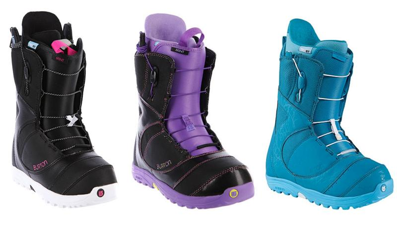
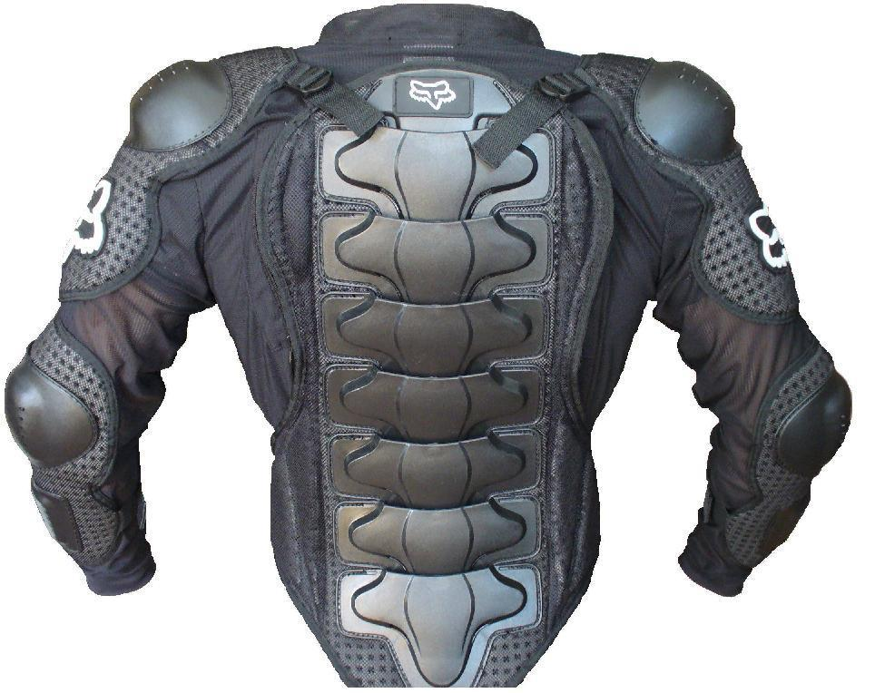
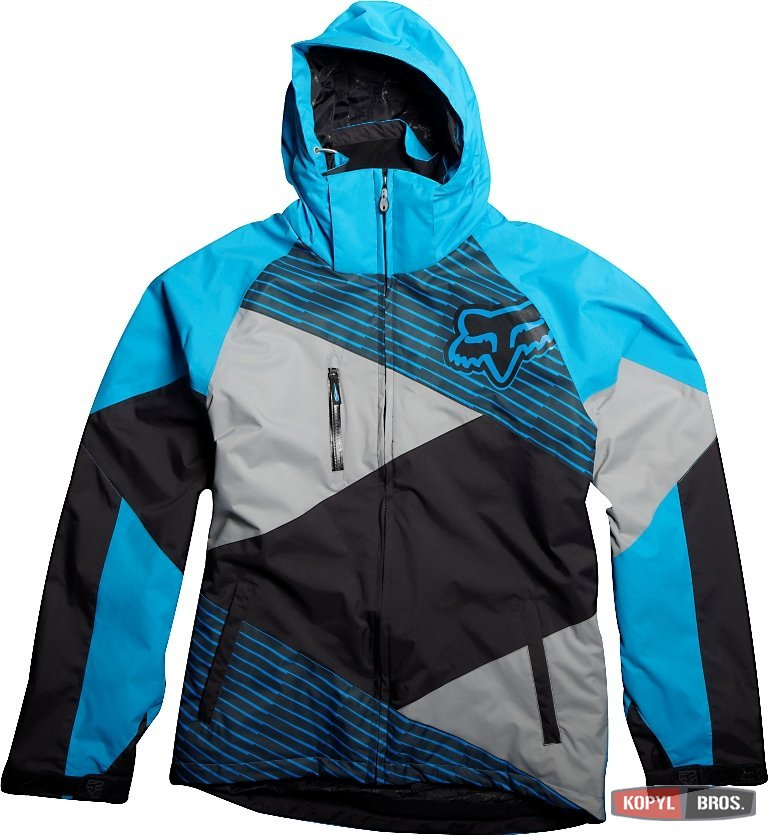

О выборе одежды и предпочтений к брендам можно написать очень много и маловероятно что вы придёте к чему-то
определённому, скорее запутаетесь ещё больше. Для вновь прибывшего в мир сноубординга будет проще
ориентироваться на удобство, качество, и на то, в какую стоимость всё это вытекает.
Стоит ли платить больше?! Да! Платить больше стоит и даже переплачивать без сомнений за обувь,
которая прослужит вам годы. На своём примере скажу, что ботинки купленные четыре сезона тому
назад за 15000 рублей достойно смотрятся внешне, держат ногу, в них тепло, отсутствуют посторонние запахи.
Тут я полностью убеждён в том, что дорого - это хорошо. О пафосе и понтах речи нет.
Ботинки

Избегайте выбирать ботинки по принципу: «Мне попробовать, а вдруг сноуборд для других, хоть потом отдам
кому-нибудь». Начнём с того, что здоровье ног нужно беречь, особенно на начальной стадии когда ноги только
привыкают к новым условиям. Да, возможно вам повезет, если вас устроит комфортабельность дешевого ботинка,
но в дальнейшем это останется единственным его достоинством. Лично я, выбор модели стоимостью менее 10000
рублей просто избегаю. Первое на что стоит обратить внимание это плотность облегания ноги. Вторым критерием,
который является очень важным это лёгкость одевания и снятия ботинка. Третье, его вес. Четвёртое, уже
личные предпочтения такие как стиль и жесткость. Если есть возможность мерить все модели подряд сделайте
это и подберите себе хорошие ботинки. Ботинки различаются по жёсткости. Для новичков, для первых занятий,
пока нога привыкает, вам лучше купить ботинки помягче. К ним ногам проще привыкнуть. Но у них есть один
существенный недостаток. В них, на определенных упражнениях, придётся прикладывать больше усилий на его
выполнение, чем в ботинках белее жестких. Ботинки жесткие требуют натренированные ноги, так как их
жесткость изначально сдавливает икры. Пройдет некоторое время чтобы привыкнуть к ним. Но в жестких ботинках
прилагаемые усилия на выполнение поворотов меньше. То на то и получается. К жестким надо привыкать, а мягкие
слабее держат ногу. Но ко всему существо человеческое приспосабливается. Так что лучше обратить внимание
на качество сборки. Швы должны быть аккуратными, болтающиеся нитки отсутствуют, они легко расшнуровываются,
внутренник держит тепло и выводит влагу, стелька обладает свойствами термофит. Все эти особенности в вместе
присущи только дорогим ботинкам. Так что на обувь и на свое здоровье выделяем бюджет по щедрости своей.
Даже если он будет стоить более того бюджета, который вы можете позволить потратить себе на сноубордическую
обувь. Вы будете довольны своим выбором!
Защита

Защита имеет такой-же по важности статус как качественная обувь. Защита убережет вас от множества травм,
синяков и ушибов. Только прощелыга инструктор даёт гарантии, что занятия пройдут без падений. Они будут
всегда, даже на высоком уровне катания у райдера всегда есть тяга к экспериментам и желание получить
очередную порцию адреналина. Любой профессионал катается в защите. Это вторая кожа райдера. Но не вся
защита безопасна, она также может навредить. Опираясь на свой опыт защита на запястья только вредила и при
падениях на вытянутую руку (это самая распространённая ошибка начинающих) приводит к перелому лучевой кости.
Эту защиту лучше заменить на умение правильно падать. Падения на сноуборде во всех случаях происходят либо
вперёд на колен либо назад на пятую точку, при это рефлекторно падающий вытягивает руки вперёд либо назад.
Если успел убрать руки то удар принимают колени или копчик. В обоих случаях опасно и очень больно. Отбитый
копчик может остаться отголоском на всю жизнь. У меня есть знакомый, который после жёсткого падения на
копчик перестал кататься на сноуборде и пожизненно теперь страдает когда ходит в туалет по большому.
Берегите себя! Защита на таз шорты со вставками. Акцентируйте внимание при выборе на качество пошива и все,
ну и если у кого бюджет жмёт ищите по цене — найдёте.
Я сам катаюсь в волейбольных наколенниках. Почему?! Потому что они мягкие, тёплые и достаточны для того
чтобы выдержать удар от падения на колени. Для унылых скептиков: посмотрите матч по волейболу и вы увидите
как двухметровые дяди с размаху шлёпаются на жесткий паркет, встают и дальше бегают прыгают. Но это одна из
причин. Есть ещё, на которую мало кто обращает внимание. Причина это в наколенниках с пластиковыми
вставками, которые на холоде становятся жёстче и усложняют работу коленного сустава. Многие скорее
замечали посторонние ощущения в коленях, либо усталость в ногах. На занятиях с детьми такого рода
наколенники затрудняют разминку коленного сустава, а это одна из важнейших процедур. В дисциплине фристайл
по той же причине райдеру сложнее дотянуться до доски чтобы сделать грэб. Так что хорошо подумайте
прежде чем купить пластиковую защиту на колени она скорее пригодится в таких дисциплинах как параллельный
слалом, бордеркросс или фрирайд, но тут уже используется более дорогая специализированная защита.
Шлем - основная защита. Беречь голову также важно как и важно уверенно кататься на доске. Одетый шлем дает
психологическую раскрепощенность и спокойствие за свое здоровье, что облегчит путь к освоению данного вида
спорта. Даже если начинающий прогнозирует только прогулочное катание. И в этом случае шлем минимизирует
травмы при столкновениях. Всегда катайтесь в шлеме! Шлем должен быть лёгким, покупайте подшлемник — многие
шлемы морозят головы. Сейчас стали появляться шлемы два в одном. Шлем и шапка. Удобно, тепло и безопасно.
Бюджет на шлем от 2500 рублей. Экономить на безопасности вредно для здоровья.
Термобелье и носки
Стараемся выбирать термобельё без шерсти. Свойство шерсти накапливать влагу. Достаточно один раз вспотеть,
пять минут постоять, остудиться и дальнейшее катание превращается в жалкие попытки согреться. Белье должно
быть синтетическим, выводящим влагу. Дешевое белье впитывает запахи и проблемно стирается. В дорогом белье
очень сложно замерзнуть, оно эффективно выводит влагу и его можно стирать без последствий на дальнейшие
использование. Носки покупайте с высоким гольфом, почти до колена. Это единственное требование к носкам.
Специализированные носки стоят в пределах 1000 рублей за пару. Покупайте две пары: на низкие температуры
(толстые) и на высокие (потоньше). Иметь с собой сменную пару приветствуется.
Флис
Промежуточный слой между термобельём и верхним слоем. Подбор по принципу подороже - подольше прослужит.
По возможности покупаем два варианта. Первый на низкие температуры, второй на температуры до -10.
Определить просто. Первый вариант толще, второй тоньше. Еще аргумент в пользу дорогого флиса: дешевый
после первой стирки начинает впитывать запахи и покрывается катушками. Тут выбираем по принципу качество,
красота и цена.
Брюки и куртка

Брюки выбираем по характеристикам мембраны. Нужно предполагать, что при обучении постоянно будет
встёгивание в крепления. Все новички производят встёгивание садясь на попу. Так будет продолжаться до
вырабатывания навыка встёгиваться стоя. Также учитываем, что под конец сезона (конец марта-апрель) снег
становится влажным и чем ниже у ваших брюк характеристики мембраны тем больше влаги они будут накапливать
влагу. Поэтому на брюки тоже готовим средства. Также брюки должны быть свободного кроя — учитываем то,
что брюки будут одеты поверх защитных шорт и наколенников. Итак, брюки должны быть свободными и иметь
высокий показатель мембраны. Он маркируется следующим образом 5000/7500 или 15000/15000. Вот такого
показателя будет вполне достаточно.
Для куртки можно обойтись меньшими характеристики по мембране, тем самым сэкономив пару тысяч рублей.
В куртке должны быть высокий воротник, внутренняя юбка, в рукаве кармашек для скипасса. Это мелочи конечно,
но потом поймёте какое это удобство.
Варежки выбирайте по своему усмотрению. Особо не заморачиваемся по цене их лучше менять каждые один-два
сезона. При активном катании они быстро снашиваютя. Так что покупайте сразу две пары. Одни варежки после
падений например набрали снега и промокли изнутри — замена должна быть. А в брюках либо в куртке должны
быть для них широкие, глубокие карманы. Запасные варежки перчатки должны быть всегда.
Аксессуары
Варежки выбирайте по своему усмотрению. Варежки должны иметь шнурок для крепления их на запястьях, также
варежки могут быть с внутренними перчатками — тоже вариант. Особо не заморачиваемся по цене их лучше менять
каждые один-два сезона. При активном катании они быстро снашиваютя. Так что покупайте сразу две пары.
Одни варежки после падений например набрали снега и промокли изнутри — замена должна быть. А в брюках либо
в куртке должны быть для них широкие, глубокие карманы. Запасные варежки перчатки должны быть всегда.
В заключении скажу, в этой статье я поделился основываясь на десятилетний опыт преподавания в сноубординге.
Видел разное. Призываю тщательно и внимательно отнестись к выбору экипировке. На это есть два основания:
безопасность и финансы. Будет обидно потратить солидную сумму и разочароваться в своем выборе.
Найдите в интернете ещё статьи, которые помогут вам получить дополнительную информацию.